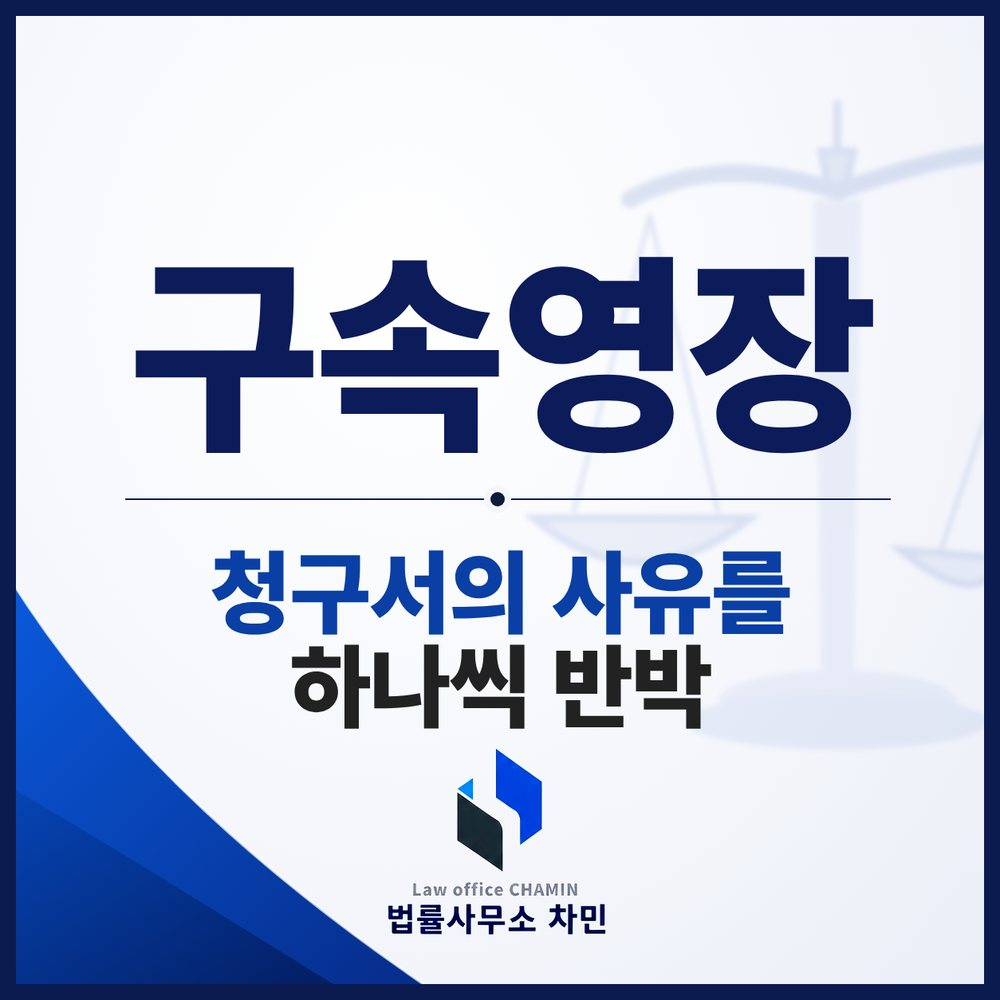

핵심 답변
영장청구서에는 구속해야 하는 이유만 적힙니다. 휴대전화를 바꾼 일, 주소를 옮긴 일, 출석에 응하지 못한 일이 증거인멸·주거부정·도망 염려로 적혀 있다면, 그 사정을 설명하는 자료를 실질심사 전에 갖춰야 합니다.
구속영장 실질심사까지 남은 시간은 대개 하루 이틀입니다. 그 짧은 시간에 해야 할 일은 영장청구서에 적힌 구속 사유를 하나씩 확인하고, 그것이 사실과 다르거나 다른 사정이 있다는 자료를 갖추는 것입니다.

구속은 세 경로로 이루어집니다
- 체포 뒤 이어지는 구속: 현행범 체포나 긴급체포, 체포영장에 의한 체포 뒤 구속영장이 청구되는 경우입니다. 판사는 특별한 사정이 없으면 청구된 날의 다음 날까지 피의자를 심문합니다(형사소송법 제201조의2 제1항).
- 체포 없이 청구되는 구속: 조사를 받으며 지내다가 어느 날 구속영장이 청구되는 경우입니다. 판사는 구인을 위한 영장을 발부해 피의자를 데려온 뒤 심문합니다(같은 조 제2항).
- 법정구속: 불구속 상태로 재판을 받다가 판결 선고와 함께 법정에서 구속되는 경우입니다.
경찰이 구속하려면 검사에게 영장을 신청하고, 검사가 법원에 청구해 판사가 발부해야 합니다. 발부되면 구속되고, 기각되면 불구속 상태로 수사를 받습니다.
판사가 보는 구속 사유
구속하려면 먼저 죄를 범했다고 의심할 만한 상당한 이유가 있어야 하고, 여기에 일정한 주거가 없거나, 증거를 인멸할 염려가 있거나, 도망하거나 도망할 염려가 있는 사유 중 하나가 있어야 합니다(같은 법 제70조 제1항). 판사는 이와 함께 범죄의 중대성, 재범의 위험성, 피해자와 중요 참고인에 대한 위해 우려도 고려합니다(같은 조 제2항).
여기서 많이 오해하는 부분이 있습니다. 구속 단계에서 요구되는 것은 유죄 판결에 필요한 정도의 증명이 아니라 범죄 혐의의 상당성입니다. 그래서 다투는 사건이라도 구속될 수 있고, 반대로 혐의를 인정해도 다른 사유가 없으면 기각될 수 있습니다.
영장청구서의 사유를 하나씩 반박합니다
영장이 청구되면 법원에서 청구서를 받아 볼 수 있습니다. 청구서에는 구속이 필요한 이유만 적히므로, 평범한 사정이 구속 사유로 바뀌어 있는 경우가 있습니다.
- 휴대전화를 바꿨다 → 증거인멸 염려: 교체 시점이 사건과 무관했다면 약정 만료나 고장 수리 기록을 내고, 기존 기기를 보관하고 있다면 제출할 의사를 밝힙니다.
- 주소를 옮겼다 → 주거부정: 이사 사유를 보여 주는 임대차계약서, 직장이나 학교, 가족과 함께 사는 사정을 자료로 냅니다.
- 출석에 응하지 않았다 → 도망 염려: 연락을 받지 못한 사정이나 일정 조율을 요청한 기록, 그 뒤 성실히 출석한 내역을 정리합니다.
- 범죄의 중대성·재범 위험: 피해 회복 노력, 합의 진행 상황, 치료나 교육 이수 계획, 가족의 보호 약속을 보여 줍니다.
국선변호인이 선정되더라도 이런 자료를 대신 찾아 주지는 않으므로, 가족이 재직증명서, 주민등록등본, 가족관계증명서, 탄원서 등을 빠르게 모아 두는 것이 중요합니다.
합의와 피해 회복을 미루지 마세요
혐의를 인정하는 사건이라면 지금 할 수 있는 피해 회복 노력을 다하는 것이 중요합니다. 구속된 뒤에 마음을 바꿔 합의금을 마련하려 해도, 그때는 이미 구금된 상태에서 1심 판결까지 기다려야 할 수 있습니다. 반대로 억울하게 부인하는 사건이라면 실질심사에서 혐의를 다투는 자료를 분명하게 내야 합니다.
발부된 뒤에는: 구속적부심사와 보석
수사 단계에서 구속되었다면 구속이 적법하고 필요한지 다시 판단해 달라는 구속적부심사를 청구할 수 있습니다(같은 법 제214조의2). 기소된 뒤에는 보석을 청구할 수 있습니다. 다만 한 번 발부된 영장을 다시 판단받으려면 실질심사 이후 달라진 사정, 예를 들어 합의 성립이나 피해 회복을 보여 주어야 받아들여질 가능성이 생깁니다. 자세한 차이는 구속적부심과 보석 칼럼에서 다뤘습니다.
부안에서 구속영장이 청구됐다면
부안경찰서에서 신청한 구속영장은 전주지방공소청 정읍지청 검사가 청구하고, 실질심사는 전주지방법원 정읍지원에서 열리는 경우가 많습니다. 부안구속영장변호사와 상의할 때는 청구서에 적힌 사유를 먼저 확인하고, 사유마다 반박할 자료를 가족과 나눠 준비하세요.